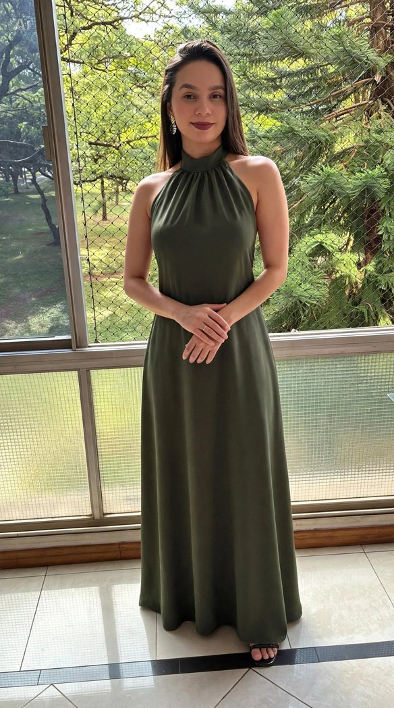

VÉRTICE / DIREÇÃO DE CONTEÚDO
Sua essência.
Em cada cena.
Um look, muitas histórias. Seu guia para transformar as peças da coleção em reels, stories e fotografias.
Escolha um look ↘13peças da coleção03formatos para criar01identidade em cada detalhe

COLEÇÃO 2026 · VERDE OLIVASEU ESTILO. SUA ESSÊNCIA.
DA IDEIA À PUBLICAÇÃO
Vista. Grave.
Conte uma história.
Escolha a peça e abra a direção de criação. Cada roteiro mostra o que enquadrar, como se movimentar e qual mensagem usar. Aproveite o mesmo look para produzir todos os formatos.
01 / BIBLIOTECA DA COLEÇÃO
Qual look vamos criar?
02 / PREPARE SUA SESSÃO
Uma sessão.
Conteúdo para ir além.
Grave na vertical, com a câmera na altura da cintura ou do peito. Use luz natural de frente e um fundo limpo. Nos closes, preserve a cor e a textura reais da peça.
As marcações ficam salvas somente neste navegador. O plano pode ser baixado para levar à gravação.